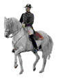
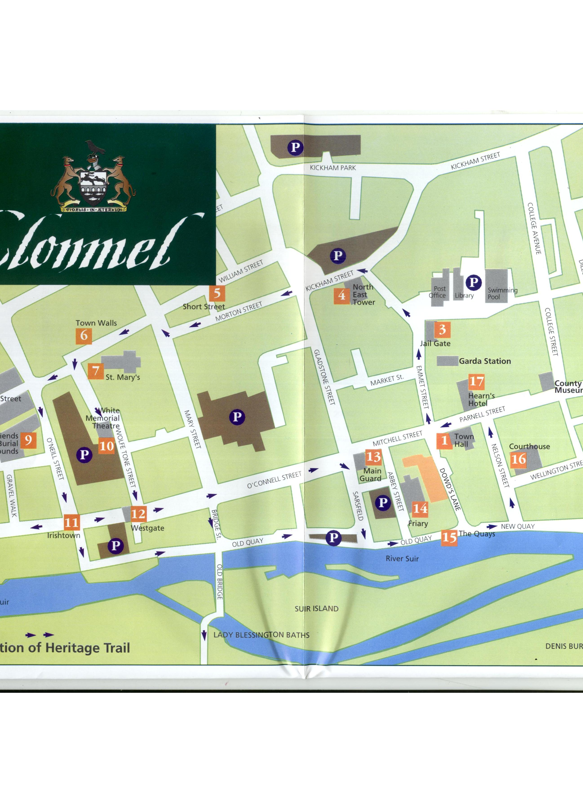

Clonmel is the biggest inland town in Ireland it situated on the N24 between Limerick and Waterford. It has a lot of
historical sites and has hundereds of tourists every year. Some buildings remain the same but some were restored as best
they could be.We will take a look at these wonderful historical sites and talk a little about each one. Clonmel is a valley
surrounded by the Knockmealdown & Comeragh mountains and Slievenamon lies to the east of the town. The River Suir runs
through the town down to meet the Celtic sea on the coastline of Ireland.

© 2004 history Of Clonmel